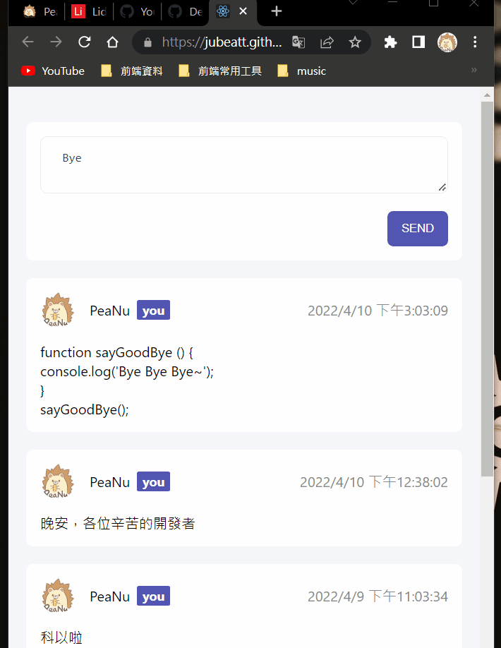

繼續堅持吧。
進度
今天把昨天寫好的 React 部落格做最後的微調，並部署到 GitHub 上：

關於部署 React 做得很完整，不像寫 Vue 的時候還得寫一個 shell script，React 直接開一個 CLI 讓你一鍵部署，果然工具可以讓人省掉很多時間。
不過這也會產生另外一個問題，就是有時候簡化太多東西時反而會不知道背後做了什麼。只能說要懂得自己做取捨吧，最好在用任何工具前先理解它幫你做了什麼，而不是傻傻的只知道可以這樣用。
接著也開始做下一個實戰練習「部落格」，開始學習跟 Router 有關的東西了。
雖然一開始就被新舊版本的問題給卡了好久，真的蠻討厭舊版新版的這種問題，因為當資訊不完整的時候真的很難 debug，希望之後在處理這方面能的問題時能更熟練一些。
學到的事情
淺談新手在學習 SPA 時的常見問題：以 Router 為例 是好的一篇文章，看完後把幾個以前沒有很懂的東西搞懂了：
- 為什麼 SPA 重新整理會 404？
- 動態跟靜態網站差在哪？
以前只有大概知道是路徑的關係，但那時候還沒什麼網路基礎知識，所以完全看不懂網路上說如果是用 History API 來做路由的話後端得跟著做調整，到底是什麼意思。
還有動態跟靜態網站的關鍵點是差在哪？以前我也說不出來。但現在可以大聲的說：
Server 有沒有幫你把檔案「做處理」
聽完這個論點後真的打通任督二脈，確實這就是最大的差別。
後來還有學到一些 React Router 的東西，大致上就是用 JavaScript 來變更網址的狀態吧，這邊就不細談了，等我更懂後再說。
題外話
雖然吃不到真的燒肉，但能吃到好吃的烤雞井飯也蠻開心的。
期許
希望明天可以順利把 React 部落格的實戰做好。